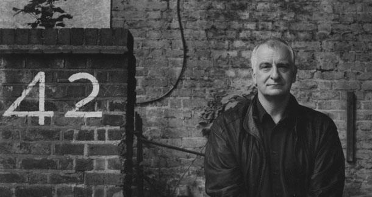

Douglas Adams
"Don't Panic"

English author, screenwriter, essayist, humorist, satirist and dramatist
The life of Douglas Adams
- Adams was born on 11 March 1952 in Cambridge
- Adams attended Brentwood School growing up where his ability to write stories became well known. A poem entitled "A Dissertation on the task of writing a poem on a candle and an account of some of the difficulties thereto pertaining" written by Adams in January 1970, at the age of 17, was discovered in a cupboard at the school in early 2014.
- On the strength of an essay on religious poetry that discussed the Beatles and William Blake, he was awarded an Exhibition in English at St John's College, Cambridge, going up in 1971.
- After leaving university Adams moved back to London, determined to break into TV and radio as a writer.
- To make ends meet he took a series of odd jobs, including as a hospital porter, barn builder, chicken shed cleaner, and bodyguard by a Qatari family, who had made their fortune in oil.
- During this time Adams continued to write and submit sketches, though few were accepted. In 1976 his career had a brief improvement when he wrote and performed Unpleasantness at Brodie's Close at the Edinburgh Fringe festival. By Christmas, work had dried up again, and a depressed Adams moved to live with his mother.
- After the first radio series of The Hitchhiker's Guide became successful, Adams was made a BBC radio producer, working on Week Ending and a pantomime called Black Cinderella Two Goes East. He left after six months to become the script editor for Doctor Who.
- The Hitchhiker's Guide to the Galaxy was a concept for a science-fiction comedy radio series pitched by Adams and radio producer Simon Brett to BBC Radio 4 in 1977.
- According to Adams, the idea for the title occurred to him while he lay drunk in a field in Innsbruck, Austria, gazing at the stars. He was carrying a copy of the Hitch-hiker's Guide to Europe, and it occurred to him that "somebody ought to write a Hitchhiker's Guide to the Galaxy".
- Adams was never a prolific writer and usually had to be forced by others to do any writing. This included being locked in a hotel suite with his editor for three weeks to ensure that So Long, and Thanks for All the Fish was completed. He was quoted as saying, "I love deadlines. I love the whooshing noise they make as they go by."
- The books formed the basis for other adaptations, such as three-part comic book adaptations for each of the first three books, an interactive text-adventure computer game, and a photo-illustrated edition, published in 1994.
- Adams described himself as a "radical atheist", adding "radical" for emphasis so he would not be asked if he meant agnostic.
- Adams was also an environmental activist who campaigned on behalf of endangered species. This activism included the production of the non-fiction radio series Last Chance to See, in which he and naturalist Mark Carwardine visited rare species such as the kakapo and baiji, and the publication of a tie-in book of the same name.
- Adams died of a heart attack on 11 May 2001, aged 49, after resting from his regular workout at a private gym in Montecito, California.
- On 25 May 2001, two weeks after Adams's death, his fans organised a tribute known as Towel Day, which has been observed every year since then.
“I haven’t known many geniuses in my life. Some brilliantly smart people, but only a tiny handful would I class as geniuses. I would class Douglas, because he saw things differently, and he was capable of communicating the way he saw things, and once he explained things the way he saw them, it was almost impossible to see them the way you used to see them.”
-- Author Neil GaimanLearn more about the life of Douglas Adams on his Wikipedia page.